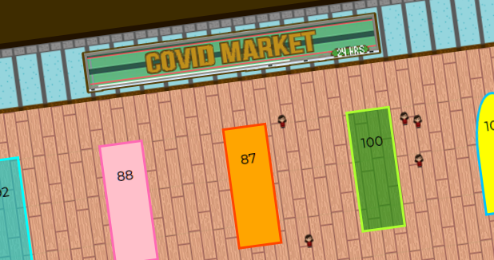
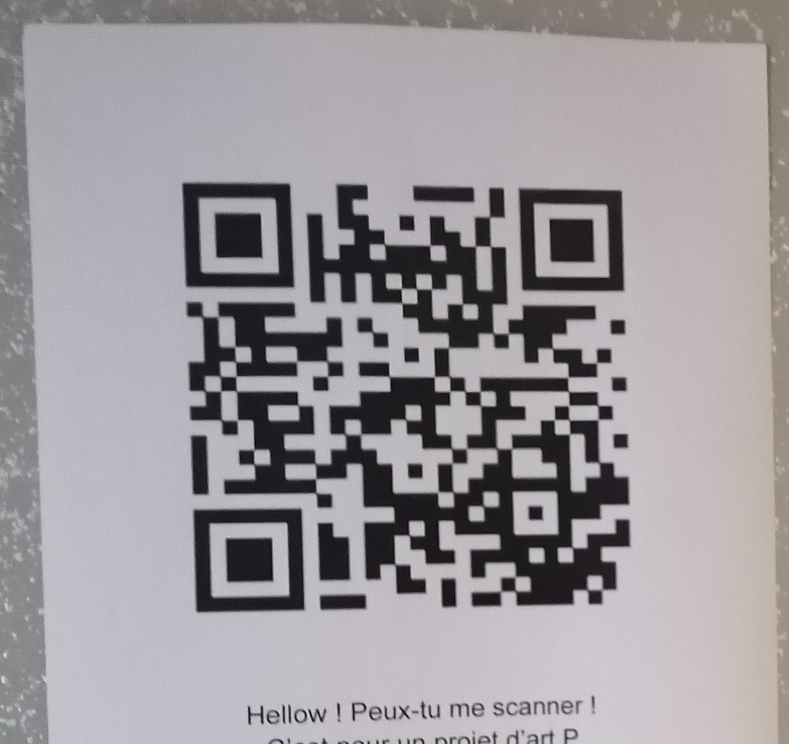
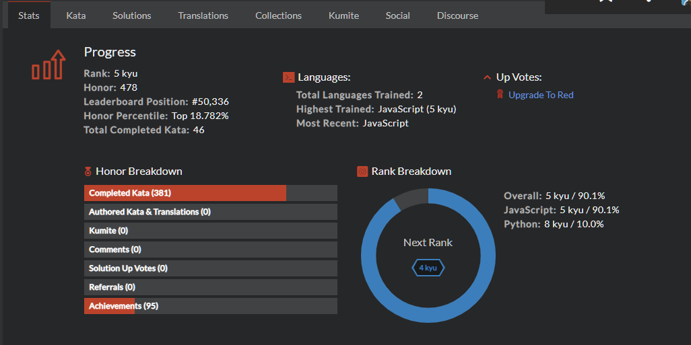
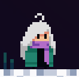
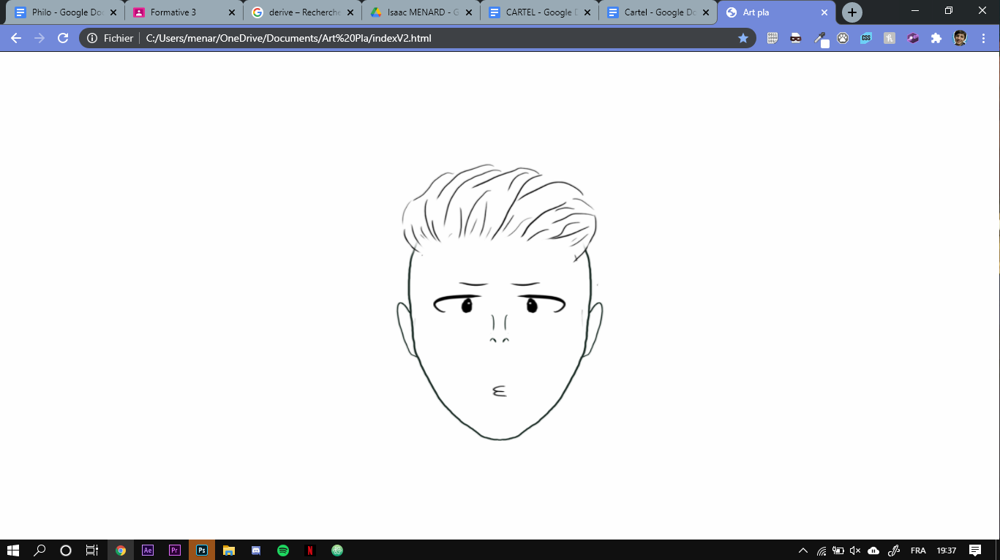
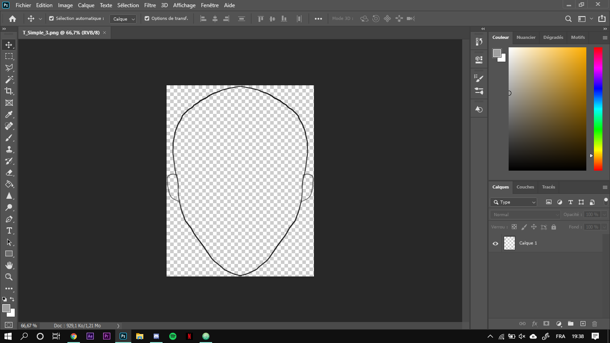
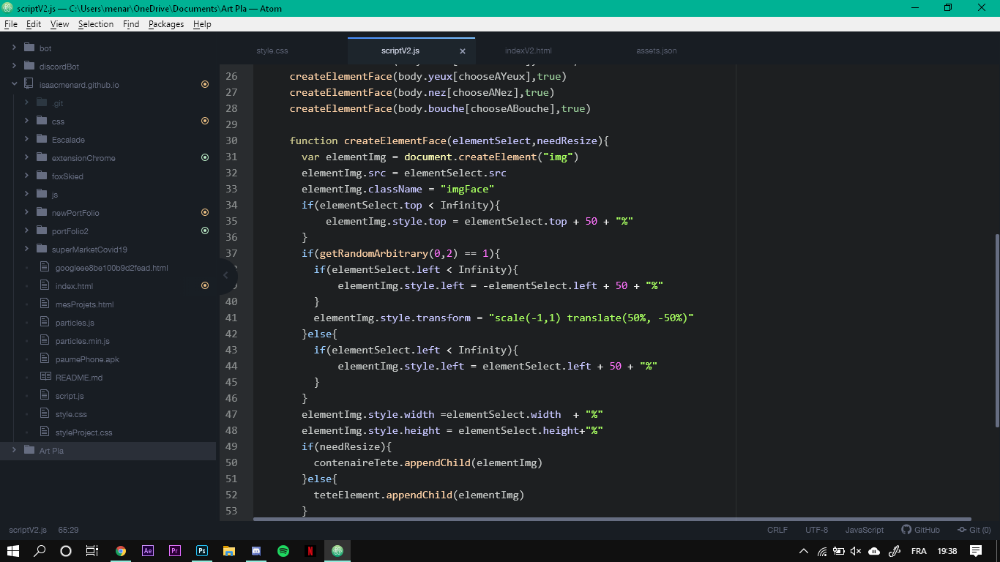
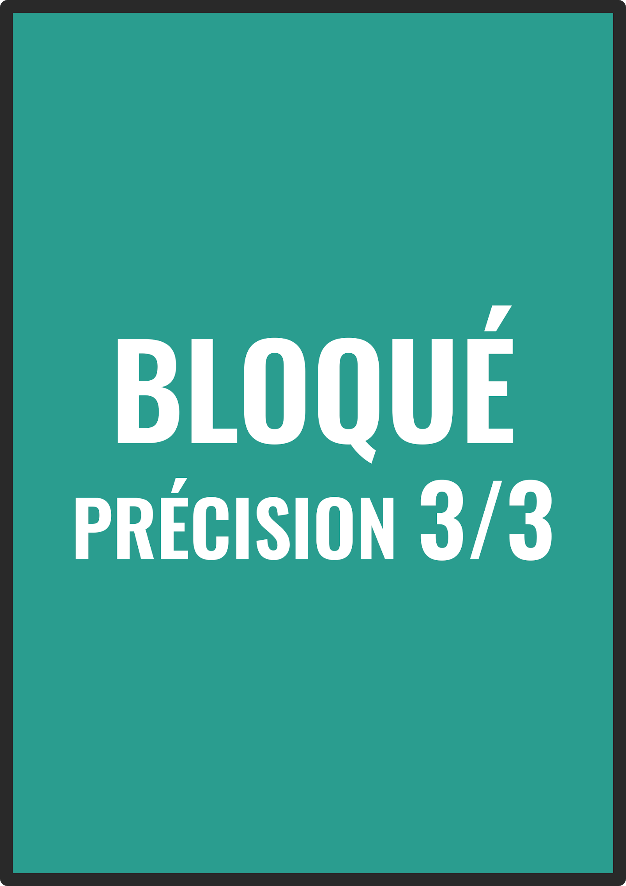
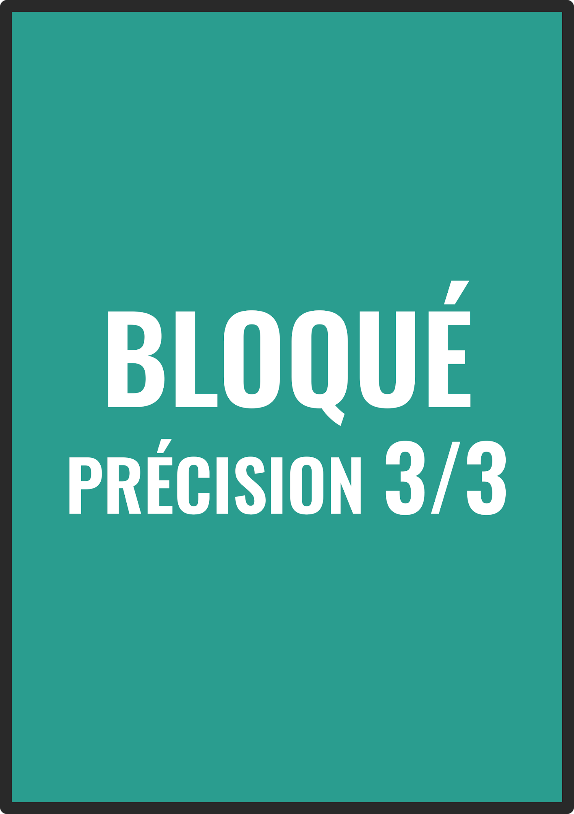

MOI











Je suis Isaac Ménard, élève en Terminale au Lycée Pilote Innovant International,
en spécialité Mathématique et Arts plastiques .
Je suis aussi Sapeur pompier volontaire ! 1ère classe à la caserne de la blaiserie de Poitiers depuis 2019.
Plus de 100 interventions réalisées. Ce volontariat fait suite à 3 ans de formation comme jeune sapeur pompier (JSP).
Donjon sans dragon est un rpg Réalisé en HTML , CSS , JS ,
PHP et MYSQL pendant une période de 2 ans.
Plusieurs prototypes on été développés avec l'utilisation de Node JS pour permettre une meilleur rapidité
lors du jeu en ligne mais également avec l’utilisation de la bibliothèque PHASER.
A se jour, le jeu a été testé par plus de 250 joueurs -- Y jouer maintenant !
Imaginez vous, responsable inventaire de supermarché !
Tâche relativement simple, puisque vous avez déjà de l'expérience
grâce à votre stage de 3ème dans la boutique de votre oncle
Mais Imaginez cela pendant le premier confinement du covid 19 !
Le covid market est un jeu ou vous devrez ne pas vous laisser submerger par la panique en voyant la pénurie de produits arriver !
Prêt pour une expérience ? testez ici !
!
Dans le cadre d'un projet d'art en cours de spécialité , nous devions présenter une oeuvre sur le hasard.
J’ai choisi de travailler sur une expérience numérique interactive relative aux hasards de l’évolution humaine.
L'objectif de l’expérience pour l’utilisateur va être de choisir des personnes qui vont se rencontrer afin d’observer le visage de l’être à qui ils vont donner naissance. La génération repose sur un algorithme mêlant les caractéristiques des parents mais également le hasard.
Inspiré du livre MONDIALE de Beb-deum, cette oeuvre a; pour but de créer un visage ressemblant à votre personnalité, par exemple celui ci :

Comment créer un personnage aléatoirement ? Premièrement il faut créer chaque partie du visage et les séparer (comme le nez ou la forme du visage…)

Une fois cela fait, nous allons créer un script permettant de choisir aléatoirement 1 nez une bouche.. parmi toute notre galerie et un visage qui sera élargi, agrandi ou rétréci de façon aléatoire. Alors les autres éléments du visage seront placés en fonction de la taille de ce visage. exemple du code :

Voici à quoi ressemble le projet actuellement (nécessite une bonne connexion internet) : https://isaacmenard.github.io/art
Comment la
production sera exposé :
La production finale sera affichée sur un QR code de taille 1m/1m exposée sur un mur du lycée sans aucune information à côté. Cette forme est assez intéressante car un QR est déjà une forme certes contrôlé mais un peu aléatoire (on ne sait jamais à quoi cela ressemblera en détail) mais surtout si quelqu'un veut savoir ce qu’il se cache derrière ce QR il devra le scanner, sans avoir le contrôle de ce qu’il verra derrière. Cette perte de contrôle est pour moi ce qui définit le hasard et doit donc être exploité à son maximum
CODEWARS est un site permettant l'apprentissage de la programmation via différents exercices.
Mon niveau actuel en Javascript est de 5, les missions peuvent aller de renvoyer nombre négatif en un positif jusqu'à recréer une base de données.
GITHUB est un logiciel permettant l'hébergement à la collaboration de fichiers de programmations.
Le code de mes projets est disponible dessus !
Mon profil est disponible Node JS
Le premier confinement a été long ! c'est pourquoi j'ai fait le choix d'apprendre un logiciel très utile : AFTER EFFECT
Cette formation n'avait pas que pour but d'apprendre l'utilisation du logiciel mais aussi les bases techniques et d'animations
J'ai pu réaliser différents dessins animés comme celui ci :
Inspiré d'un design vu sur internet, j'ai réalisé différents posters grâce au logiciel Indesign de la suite Adobe
Cela m'a permis de me former sur le logiciel et d'avoir un très beau rendu :
Tous les posters sont disponibles ICI !
Pour la réalisation d'un projet d'art, avec pour but, une oeuvre qui fait participer le spectateur
J'ai réalisé 9 QR codes reliant à 9 tableaux différents.
Ces 9 tableaux sont modifiables par leurs couleurs. Le spectateur choisi qu'elle case modifier.
Une fois cela fait, les 9 tableaux sont fusionnés pour n'en former qu'un que sera l'oeuvre.
Les 9 QR codes sont cachées dans le lycée

Ceci représente le tableau le premier jour ou a été exposé l'oeuvre
Celle ci, complète d'aujourd'hui est disponible ICI
C’est un jeu de société de deck building et de stratégie. Il peut très bien être joué par des enfants Nous sommes des entraîneurs de volley et souhaitons gagner un match avec notre équipe. C’est donc un jeu un contre un.
Pour cela nous devons d’abord choisir comment
entraîner nos joueurs en s’appuyant sur la stratégie de l’autre et dans un second temps faire le match et bien sûr le gagner
2 phases :
le premier, notre deckbuilding : les joueurs devront aller
au “marché” qui correspond à l'entraînement pour créer une pile par joueur (il y en a 6)
Par exemple, un défenseur peut choisir de s'entraîner à la manchette. Il aura donc
un bon deck de défense mais ne sera pas forcément bon pour faire des passes.
A quoi ressemble une pile de joueurs ?
Il y a 4 catégories de cartes :
- de Défense, pour but de renvoyer au passeur les ballons difficiles
-
d’Attaque, pour but de renvoyer de façon difficile mais des balles faciles
- de passe, pour but de créer des balles faciles pour les attaquants
- et de service, pour but d’introduire le match. Cependant cette pile sera commune à tous les joueurs
Toutes ces catégories sont divisées en 3 types :
- Raté → Le point est perdu
- Aléatoire → Le ballon va sur un joueur
désigné aléatoirement
- Réussi → le joueur choisi vers qui va le ballon
Ces catégories ont 3 types de précisions permettant le deck building numéroté de 1 à 3 : Si la
précision d’une passe est de 3, il sera plus simple pour l’attaquant de tirer. Il piochera alors 3 cartes de sa pile attaque et en choisira une. En revanche, si la précision est mauvaise et est donc
numérotée à 1, il ne pourra alors que piocher 1 carte. La probabilité de rater est donc plus élevée.
Cette précision s’applique aussi pour le service et l’attaquant, plus le tir
est précis, moins l’adversaire pourra piocher de cartes. [schéma des cartes]
Le deuxième : le match
Les 12 joueurs (6 contre 6) seront placés sur le jeu en face. [schéma plateau]
Le
ballon sera incarné par un pion. Le but est d’avoir 25 points et donc de forcer l’adversaire à rater son coup.
Le joueur commence par piocher une carte service. Si le tir est réussi en fonction de la carte
piochée, il peut choisir sur quel joueur le ballon va arriver en plaçant le pion sur la pile concernée. Si la carte piochée est aléatoire, un dé est lancé pour savoir où le ballon va
atterrir.
En revanche, si la carte est marquée Raté, le point est perdu.
Une fois le ballon envoyé du côté adverse, c'est autour de l’adversaire de jouer. Il a le droit de faire passer
le ballon à un maximum de 3 joueurs. La meilleure combinaison est la réception du défenseur qui est parfois aléatoire mais qui permet une passe à un autre joueur, qui la renvoie de manière parfaite
à un attaquant pour être renvoyé dans le camp adverse avec la plus grande
 

J'utilise pour dessiner une tablette graphique sur photoshop, voici quelques unes de mes réalisations :
J'ai aussi créé des applications mobiles ! (Disponibles gratuitement sur playStore)
La première est un projet réalisé avec une équipe de 15 développeurs dans le cadre d'un projet de lycée
Son objectif ? Imaginez devoir aller aux toilettes, que tout se passe bien jusqu'à
ce que vous vous rendiez compte qu'il n'y a plus de PQ !
Ne paniquez pas ! signalez le sur l'application et un agent viendra directement vous sauver !
Malheureusement cette fonctionnalité n'a pas pu voir le jour suite au premier confinement qui a stoppé net le projet
Quelques screens de l'appli :
J'ai aussi créé un prototype d'application nommé escaplication :
son but, guider lors de la réalisation de voies d'escalades !
L'essai plateformer est un mini jeu réalisé avec PHASER qui avait pour objectif d'être utilisé comme portfolio
Cependant celui ci était tellement cool que rajouter du texte aurait gâché le jeu !
Il sera bientôt développé pour être joué avec plus de difficulté !
En attendant vous pouvez tester sa version 1 ICI !